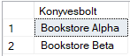
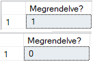
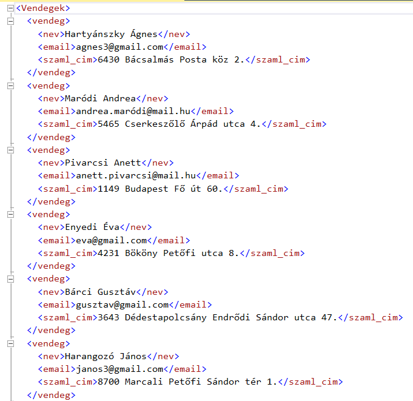
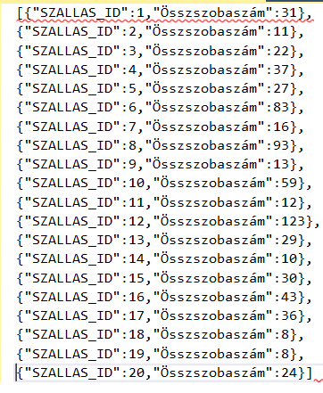
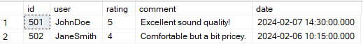

T-SQL XML and JSON Processing
SQL Server examples focused on reading, validating, transforming, and exporting semi-structured data with XML and JSON tools.
Overview
This page demonstrates how SQL Server can work not only with relational tables, but also with semi-structured formats such as XML and JSON. The selected examples show both directions: extracting values from XML or JSON documents, and exporting SQL query results back into structured text formats.
This type of knowledge is useful whenever a database must exchange data with web services, applications, external systems, or configuration-like document structures. It also shows that T-SQL can handle data transformation tasks beyond classic joins and aggregations.
What This Page Demonstrates
XML Reading
Extracting node values, checking whether elements exist, and navigating XML structures with T-SQL methods.
SQL to XML
Converting relational query results into XML output for structured export.
SQL to JSON
Generating JSON documents directly from grouped SQL query results.
JSON Parsing
Transforming nested JSON arrays and objects into relational table format with OPENJSON.
Core Transformation Workflow
XML / JSON Source → Value Extraction → Existence Check → Table Conversion → SQL Querying → XML / JSON Export
Selected XML and JSON Examples
The following examples were selected because they show the most useful directions of XML and JSON processing in SQL Server: read values, validate structure, transform relational data into document format, and parse document format back into SQL tables.
Example 1 — Extract Bookstore Names from XML
This example reads bookstore names from an XML document containing customer and order data. It demonstrates how XML nodes can be navigated and projected into a tabular result with the .nodes() and .value() methods.
This is a clear example of extracting repeated elements from XML into a relational rowset.
DECLARE @xml XML;
SET @xml = N'
<BookstoreOrders>
<BookstoreCustomer custid="101">
<bookstore>Bookstore Alpha</bookstore>
<Order orderid="501">
<orderdate>2015-05-01T00:00:00</orderdate>
</Order>
</BookstoreCustomer>
<BookstoreCustomer custid="102">
<bookstore>Bookstore Beta</bookstore>
<Order orderid="504">
<orderdate>2014-09-18T00:00:00</orderdate>
</Order>
</BookstoreCustomer>
</BookstoreOrders>';
SELECT bookstore.value('.', 'varchar(20)') AS 'Konyvesbolt'
FROM @xml.nodes('/BookstoreOrders/BookstoreCustomer/bookstore') AS b(bookstore);

Example 1 Query Results
Example 2 — Check Whether an XML Order Exists
SQL Server can also validate whether a specific node or attribute exists inside an XML document. In this example, the query checks whether orders with given identifiers are present.
This type of query is useful for validation rules, duplicate checks, and document integrity tests.
SELECT @xml.exist('/BookstoreOrders/BookstoreCustomer/Order[@orderid ="504"]');
SELECT @xml.exist('/BookstoreOrders/BookstoreCustomer/Order[@orderid ="506"]');

Example 2 Query Results
Example 3 — Export SQL Result to XML
This example converts relational guest data into XML format. It shows how SQL query results can be returned in an XML structure, which is useful for data exchange and structured export.
The FOR XML clause makes it possible to serialize standard query output into a document-oriented format.
SELECT nev, email, szaml_cim
FROM vendeg
WHERE DATEDIFF(year, szul_dat, GETDATE()) > 57
FOR XML AUTO, ELEMENTS, ROOT('Vendegek');

Example 3 Query Results
Example 4 — Export Aggregated SQL Result to JSON
This example generates JSON output showing how many rooms belong to each accommodation. It demonstrates that SQL Server can also serve as a JSON-producing layer for applications or APIs.
This is a practical example of returning structured API-like output directly from SQL.
SELECT Szallashely.SZALLAS_ID,
SUM(Szoba.FEROHELY) AS 'Osszszobaszam'
FROM Szallashely
JOIN Szoba ON Szallashely.SZALLAS_ID = Szoba.SZALLAS_FK
GROUP BY Szallashely.SZALLAS_ID
FOR JSON AUTO;

Example 4 Query Results
Example 5 — Parse JSON Reviews with OPENJSON
This example reads a nested JSON array of product reviews and converts it into a relational result set. It is one of the strongest examples on the page because it shows how SQL Server can flatten semi-structured JSON into queryable table form.
This example is especially relevant in modern systems where SQL databases often receive JSON payloads from applications or services.
DECLARE @js NVARCHAR(MAX);
SET @js = N'[{
"product": {
"id": 101,
"name": "Wireless Headphones"
},
"reviews": [
{
"id": 501,
"user": "JohnDoe",
"rating": 5,
"comment": "Excellent sound quality!",
"date": "2024-02-07T14:30:00"
},
{
"id": 502,
"user": "JaneSmith",
"rating": 4,
"comment": "Comfortable but a bit pricey.",
"date": "2024-02-06T10:15:00"
}
]
}]';
SELECT *
FROM OPENJSON(@js, '$[0].reviews')
WITH (
id INT '$.id',
[user] VARCHAR(20) '$.user',
rating INT '$.rating',
comment VARCHAR(50) '$.comment',
[date] DATETIME '$.date'
);

Example 5 Query Results
Why These Examples Matter
They Extend SQL Beyond Tables
These examples show that SQL Server is not limited to purely relational data processing.
They Support System Integration
XML and JSON handling is often needed when databases communicate with other applications.
They Combine Parsing and Export
The page includes both directions: document-to-table and table-to-document transformations.
They Show Modern SQL Server Features
OPENJSON and XML methods are strong indicators of practical SQL Server knowledge beyond beginner querying.
Key Takeaways
- SQL Server can read and write semi-structured data. XML and JSON are both supported directly in T-SQL.
- XML methods are useful for document navigation and validation. Nodes, values, and existence checks provide flexible access.
- JSON support is highly practical in modern workflows. OPENJSON and FOR JSON connect SQL Server with application-style data exchange.
- This topic shows real integration-oriented SQL skills. It goes beyond classic SELECT statements and moves toward interoperability.
Navigation
This page is part of the T-SQL portfolio section and focuses on XML and JSON transformation tasks in SQL Server.